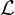
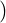
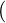
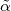
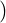
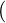
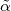

![∂ i
∂tρ = -ℏ-[H, ρ]+ Lnonh.[ρ]](documentation0x.png)
ACE Documentation
Moritz Cygorek
This document describes how to use the C++ code ACE for the solution of open quantum systems using the automated compression of environments (ACE) method. The article explaining the method can be found here.
ACE enables numerically exact simulations of the dynamics of an open quantum systems described by the quantum Liouville equation
|
| (1) |
where the microscopic Hamiltonian
 | (2) |
is split up into system HS and environment Hamiltonians HE. The environment Hamiltonian HE, which we define as also including the system-environment coupling, is assumed to be separable into NE independent modes k. nonh.[ρ] denotes non-Hamiltonian contributions to the dynamics such as Lindblad terms affecting the system, the environment, or both.
The goal is to obtain the reduced system density matrix discretized on a time grid tl = ta + lΔt up to a given final time tn = ta + nΔt = te. This can be done using the path integral expression
 | (3) |
where ραl = ρνlμl is the reduced system density matrix at time step l,  describes the free
time evolution of the system without the environment, and
describes the free
time evolution of the system without the environment, and  is the process tensor (PT)
accounting for the effects of the environment. To keep the notation compact, we combine two
Hilbert space indices on the system density matrix νl and μl into a single Liouville space index
αl = (νl,μl). The PT can always expressed in the form of a matrix product operator
(MPO)
is the process tensor (PT)
accounting for the effects of the environment. To keep the notation compact, we combine two
Hilbert space indices on the system density matrix νl and μl into a single Liouville space index
αl = (νl,μl). The PT can always expressed in the form of a matrix product operator
(MPO)
 | (4) |
In the explicit derivation of the matrices  , the inner indices dl correspond to a complete basis
of the Liouville space of the full environment, which can be extremely large. However, the inner
dimensions of MPOs can be systemaically reduced using established compression
techniques. Here, we use a compression method based on singular value decomposition
(SVD), where singular values below a predefined threshold ϵ are disregarded. The time
discretization Δt and the compression threshold ϵ are the main convergence parameters of
ACE.
, the inner indices dl correspond to a complete basis
of the Liouville space of the full environment, which can be extremely large. However, the inner
dimensions of MPOs can be systemaically reduced using established compression
techniques. Here, we use a compression method based on singular value decomposition
(SVD), where singular values below a predefined threshold ϵ are disregarded. The time
discretization Δt and the compression threshold ϵ are the main convergence parameters of
ACE.
The working principle of ACE is to construct the PT in compressed MPO form by calculating the PTs for the individual environment modes k and then combining them one by one. After each combination step, the PT MPO is compressed using SVDs to reduce the inner dimensions to a manageable size at all times. Once the compressed PT is calculated, the reduced system density matrix for a given system Hamiltonian and system initial state can be obtained by contracting a simple tensor network.
The code is written in C++ to combine low-level optimization (memory storage, access to LAPACK routines) with high-level abstraction. It has been most thoroughly tested on the Linux operating system but it also compiles and runs on Mac and Windows.
We have tried to keep the dependencies on other codes minimal. However, the Eigen library is very handy and provides useful and efficient routines, e.g., for matrix exponentials, so we make use of it at multiple places in the code. This dependency is harmless, as Eigen is “header only”, i.e. it does not require installation beyond downloading the header files.
The numerically most demanding part of ACE is the calculation of SVDs, for which LAPACK routines are available (optional), e.g., within the Intel MKL. These routines provide some degree of parallelization and, according to a few tests, reduce the computation time typically by a factor of 2-5. Note, however, using LAPACK routines, we have encountered instabilities for very small threshold values (ϵ ≪ 10-12). Whether or not to use these routines is decided by the user at the compilation stage.
On Linux or Mac, Makefiles can be used for the compilation and some tuning can be done by command line arguments. For example, for the compiler to find the Eigen library, please set the variable EIGEN_HOME manually (only required for the compilation step) in such a way that the file $EIGEN_HOME/Eigen/Eigen exists. If the variable is not set, the script will try the most common directory /usr/include/eigen3/, which is, e.g., the place where Eigen is installed on Ubuntu Linux by the command sudo apt install libeigen3-dev.
If the MKL is installed on your system, the MKLROOT environment variable should be set to the correct directory. If this variable is set at the compilation stage, ACE will use the corresponding SVD routines.
To compile the code, set the corresponding environment variables, go into the main directory of ACE and type in the console
This compiles the code and moves the binaries into the bin/ subdirectory. For easy access later on, we suggest to add this directory to your Linux environment via the PATH variable. For example, add the follwing line to your ~/.bashrc file
where … is to be replaced by the correct absolute path to the ACE directory. Log out and log in again to activate the changes. Then, go to a temporary directory and run
This should generate a file ACE.out whose first lines are
Congratulations! You have just executed your first (rather boring) simulation using ACE.
Compilation on Windows has been tested using the GCC compiler in MinGW. We provide a compile script with compile.bat in the ACE directory. Please take a look and modify the path to the Eigen library according to your system specifics.
ACE is designed to be fully controllable by command line parameters, so the source code does not have to be modified and no prior knowledge in C++ required. Alternatively, the command line parameters can be composed into a driver file, which can then be passed to the code via the -driver command line option or simply as the first command line argument.
Initial states, Hamiltonians, Lindblad terms, and observables for the system as well as for individual environment modes can be specified directly and quite generally, but additional sets of parameters are implemented that allow a more convenient control of certain typical types of environments.
Generally, times, energies, and temperatures are expected to be provided in units of ps, meV,
and K, but it’s easy to work with dimensionless quantities by rescaling the total Hamiltonian
as well as the time, which are related by  |ψ⟩ = (λH)|ψ⟩.
|ψ⟩ = (λH)|ψ⟩.
Many objects, such as initial states, Hamiltonians, or observables are complex matrices. The ACE code has a rudimentary parser that interprets “matrix valued expressions” which are identified by curly braces. The bra-ket notation (or rather ket-bra expressions) is supported. Note that to generate the corresponding matrices, the Hilbert space dimension has to specified. Concretely, {|i><j|_d} is interpreted as the operator that describes a transition from state j to state i in a d-dimensional space, where we use the convention that i,j = 0,1,…,d - 1.
For example, the Pauli matrix σy can be expressed as { -i*|1><0|_2 + i*|0><1|_2} or {i*( -|1><0|_2 + |0><1|_2 )}. Some operators are also known by name, such as the Pauli matrices sigma_x, sigma_y, sigma_z, or the identity matrix Id_d, where d has the be replaced by the respective dimension of the Hilbert space. Also supported are bosonic creation, annihilation, and number operators bdagger_d, b_d, and n_d, and direct products of matrices can be defined using otimes as in { hbar*1*(|0><1|_2 otimes bdagger_4 + |1><0|_2 otimes b_4)}, which describes the Jaynes-Cummings interaction with coupling strength 1 between a TLS and a bosonic mode containing up to (4-1)=3 photons. Furthermore, some constants like hbar (in units of meV ps) or pi can be used as well as the square root function sqrt(...).
Note that when specified directly on the command line, quotes are required around the curly braces to avoid interpretation of the curly braces by the bash shell. No quotes are used in parameter files.
Initial system states are given in terms of the initial system density matrix, which is of matrix valued expression form specified by the parameter initial. To extract relevant information, the values of a set of observables for each time step are written into an output file (file name specified by parameter outfile, default value: “ACE.out”). These observables are desribed by operators on the system Hilbert space, e.g., ⟨Â⟩ = TrS(ÂρS), where ρS is the reduced system density matrix. The operators  have to be provided as matrix valued expressions to the parameter add_Output. This parameter can occur multiple times, with every occurrence adding another two columns to the output file, corresponding to real and imaginary parts of the respective operator average. If no parameter add_Output is specified, default values are used which are equivalent to the command line -add_Output "{|1><1|_2}" -add_Output "{|0><0|_2}" -add_Output "{|0><1|_2}". This implies that it is absolutely necessary to specify add_Output explicitly when dealing with a system with more than two levels.
It is generally advised to specify the three parts—initial density matrix, system Hamiltonian, and output observables—in every parameter file. Of course, the dimensions have to be the same of all three types of matrices.
A few hands-on examples demonstrating the usage in concrete applications are given in the next sections.
In this section, we focus on the usage of the ACE code on examples without explicit environment parts, i.e., closed few-level systems or Lindblad master equations.
We begin with some of the most important parameters: The starting time, the final time, and the time step width can be specified by the command line options -ta, -te, and -dt, respectively, which have the default values 0, 10, and 0.01. You will find the corresponding time grid in the first column of output file ACE.out, whose name may be changed via the option -outfile. By default, there will be no environment, the system is a two-level system (TLS) initially in its ground state, and the system Hamiltonian is HS = 0. For TLSs, if not specified otherwise, the second and third columns in the output file will be the real and imaginary part of the diagonal element of the system density matrix corresponding to the exited state. If no parameters are specified explicitly, these columns should remain 0.
As a first example, run
This will generate an output file ACE1.out, which contains the dynamics of a constantly driven TLS from 0 to 20 ps with time steps of 0.001 ps. The driving is described by the Hamiltonian HS = (ℏ∕2)(|X⟩⟨G| + |G⟩⟨X|) (note: hbar is given in units of meVps).
Plotting the second column of ACE1.out (in gnuplot: plot "ACE1.out" using 1:2 with lines) reveals clear Rabi oscillations of the excited state occupations:

The same result can be obtained creating and editing the file driver1.param:
______________________________________
______________________________________
and running
or simply
I.e., the first parameter is interpreted as a driver file.
A more complicated scenario can be described by the following driver file (driver2.param), where an initially excited TLS, optionally subject to radiative decay described by a Lindblad term, is driven by a Gaussian laser pulse:
______________________________________
______________________________________
This produces the following dynamics:

where the two curves are results of calculations where the Lindblad term is either turned off or on. The # symbol in a driver file indicates a comment, i.e. anything after it is ignored. The parameters of add_Lindblad are the rate γ and the operator A for the Lindblad term
 = γ[AρA - 2(A Aρ + ρA A)].](documentation5x.png) | (5) |
The parameters of add_Pulse Gauss are the pulse center (here: tc = 10 ps), the pulse
duration (τFWHM = 1 ps), the pulse area (A = 1π), the detuning (δ = 0 meV), and the
operator ( = |1⟩⟨0|) describing the light-matter coupling, which enter the driving
Hamiltonian
= |1⟩⟨0|) describing the light-matter coupling, which enter the driving
Hamiltonian
 | (6) |
In the following subsections, we demonstrate how environment can be included. First of all, note that as we include multiple environment modes, the total environment Liouville space becomes prohibitively large very fast and needs to be compressed to remain tractable, which is the core of the ACE algorithm. To enable compression, one has to specify a criterion. Most commonly, we use sweeps of singular value decompositions (SVDs) and only keep the subspaces related to singular values larger than a threshold ϵσ0, where σ0 is the largest singular value. This is enabled in the code by specifying a value to the paramter threshold. To provide small values, the C/C++ notation for powers of ten is useful, e.g., use -threshold 1e-7 in the command line to enable compression with threshold ϵ = 10-7. The smaller the threshold, the more accurate the simulation. However, for very small thresholds also the calculation times as well as the memory demands increase. Alternatively, one can fix the maximal inner dimension of the PT MPO by defining compress_maxk. If both are specified, compress_maxk acts as an upper bound for the inner dimension.
In principle, all that is required to add a single mode is the environment Hamiltonian HE including the interaction with the system and the initial environment mode density matrix, which can be provided in the form of two matrix valued expressions to the add_single_mode parameter. For example,
______________________________________
______________________________________
describes the Jaynes-Cummings coupling of a two-level system with a bosonic mode which is detuned with respect to the two-level system energy by a frequency 5 in units of the system-boson coupling (which is set to 1). This interaction conserves the number of excitations and the dynamics will look like strongly detuned coherent Rabi oscillations. Note that because HE contains the system-environment interaction, it lives on the product Hilbert space of system and environment (system part comes first if otimes is used), whereas the environment initial density matrix lives in the bare environment Hilbert space.
Adding more modes is as simple as adding more add_single_mode lines to the parameter file. However, for many practically relevant bath more convenient sets of command line parameters are provided, some of which we discuss in the following subsection.
One of the predefined environments is defined by the Fermionic hopping Hamiltonian
|
| (7) |
Here, the system is a Fermionic state that may be occupied |1⟩ = cS†|0⟩ or not |0⟩. The occupation is created by cS† or destroyed by cS. The environment consists of several Fermionic states, whose occupations are created and destroyed by ck† and ck, respectively. In the limit NE →∞, the environment consists of a continuum of state, which can be used to model the electronic states in metallic contacts in proximity to a molecule or a quantum dot. Consider the driver file:
______________________________________
______________________________________
Fermion_* indicates that what comes after is a parameter for the Fermionic environment specified by the above Hamiltonian. Fermion_N_modes tells the code to use 2 Fermionic states as environment. The coupling strength is determined by Fermion_g and the energies are equidistantly sampled from Fermion_omega_min to Fermion_omega_max (in inverse picoseconds; there also exist the alternative Fermion_E_min and Fermion_E_max to specify the band width in units of meV). Here, both limits are set to zero, so that both environment modes are resonant to the TLS transition. By setting Fermion_EFermi 1e4 the Fermi level is set to such a high value that all environment states are initially occupied. There is also the parameter Fermion_temperature to specify the temperature (in units of Kelvin) of the Fermi distribution. If not specified, the global temperature parameter will be used, whose default is 0 K.
Here, the initial state of the system is empty. Therefore, electrons will start to move from the Fermionic environment to the system. The dynamics is show below and it is discussed in the ACE article.

Typically, the environments of open quantum system are assumed to form a continuum. In ACE, we simply discretize the continuum. For the case of metallic leads, it turns out that using NE = 10 modes is already not too bad. Consider the driver file Fermion.param:
______________________________________
______________________________________
Here, instead of Fermion_g, we use Fermion_rate to specify the rate that we would expect in the Markov limit. Then, the coupling constant is calculated internally by solving the Fermi’s golden rule expression for g. The respective dynamics is compared with the Markovian result 1 - exp(-x) in the following plot:

Increasing NE even further to about 100 while keeping the same density of states (i.e. increasing the band width simultaneously) will produce a behaviour very close to the Markovian results.
The class of Boson_* environments covers environment Hamiltonians of the form
|
| (8) |
In the case Ôsys = |1 >< 1|2, this leads to the independent boson model, which is often used to model the effects of vibrational baths (phonons). If instead Ôsys = |0 >< 1|2 is used, the Hamiltonian describes Jaynes-Cummings interactions, e.g., a quantum emitter coupled to photon modes. This name of the parameter for this operator is Boson_SysOp.
The command line arguments are similar to that for the Fermionic case, only that Fermion_* is replaced by Boson_*. The main differences to the Fermionic case are that initial thermal states now follow Bose statistics and that the number of excitations per mode is, in principle, unbounded. Here, we truncate the Boson Hilbert space per mode and only account for the M lowest states, i.e. M - 1 excitations. This information if provided to the code by the parameter Boson_M, whose default value is M = 2.
As a first example, consider the radiative decay of an initially excited two-level quantum emitter. The corresponding parameter file radiative_decay.param is
______________________________________
______________________________________
The resulting dynamics resembles the Markovian result with excited state occupations ⟨(|1⟩⟨1|)⟩ = exp(-t). (Again, an environment with larger band width would lead to a more Markovian behaviour, but has to be discretized with more modes and therefore takes longer to calculate.).
One caveat for calculations at finite temperatures: The Jaynes-Cummings Hamiltonian acts in the rotating frame. This means that the physical energy of a Bosonic excitation is actually (ℏω + Eshift)n, where Eshift is the energy shift corresponding to the frequency of the rotating frame. Hence, negative values of ω are physically allowed if their modulus is smaller than Eshift. For initial thermal states, this value can be provided by Boson_E_shift_init or Boson_omega_shift_init. The latter is internally multiplied by ℏ.
For structured baths where every environment mode is coupled to the system with a different strength, i.e., gk is not constant as a function of k, there are different ways to pass the values for Ek = ℏωk and gk to the code. One way is to compile a file with two columns, the first listing the values of Ek (or ωk) and the second listing the corresponding values of gk. Please make sure the number of lines matches Boson_N_modes. The name of this file can be passed to the code by the argument Boson_E_g_from_table (or Boson_omega_g_from_table). For example, if we create the file “N20.tab” with the 20 lines
the following driver file
exactly reproduces the results in “radiative_decay.out”.
Another way, which is highly recommended, is to use instead a spectral density defined by
|
| (9) |
which is assumed to be a continuous function of ω in the limit of infinitely fine discretization. The spectral density has a more intuitive interpretation. For example, in the case of radiative decay, the radiative decay rate in the Markov limit of a system driven with frequency ω is 2πJ(ω), a finding which we reproduce numerically next. In contrast, to reproduce a given rate, the values of gk have to be modified when the discretization changes.
A spectral density can be provided to the ACE code in the form of a file that contains two columns corresponding to a set of sample points ωi and J(ωi). The sample points ωi are not related to the discretization used for defining the set of environment modes. Instead, the frequency domain from Boson_omega_min to Boson_omega_max is discretized into Boson_N_modes intervals and the corresponding values for gk are obtained by linearly interpolating between the closest sample points to ωk in the spectral density file. This way, the spectral density file has to be generated only once and can be reused for calculations with different mode discretizations. In the following example, we reproduce the above result for radiative decay, now using a flat spectral density. To this end, generate the file Jflat.J with the following two lines
Therefore, all interpolated values of J(ω) will be 1. We then use the parameter file
The parameter Boson_J_scale rescales the spectral density by a global factor for all sample points, in this case 1∕(2π), so the expected Markovian rate will be 2πJ(ω) = 2π(1∕(2π)) = 1. Please check that this approach reproduces exactly the result for radiative decay discussed above.
Some commonly used spectral densities are predefined and can be enabled by the command line argument Boson_J_type. For example, one often uses spectral densities of the form
 | (10) |
which is characterized by the exponent s distinguishing ohmic s = 1 from sub- (s < 1) and superohmic (s > 1) spectral densities. α sets the strength of the system-bath coupling and H(ω) is a cut-off function used to make the large-ω limit well defined. This type of spectral density is activated by setting Boson_J_type to ohmic. α and s can be set via Boson_J_alpha and Boson_J_s, respectively. The finite energy range defined by Boson_omega_min and Boson_omega_max already leads to a natural cutoff, but one can also use, e.g., an exponential cutoff H(ω) = exp(-ω∕ωc) by setting Boson_J_cutoff to exp and Boson_J_omega_c to ωc.
Keep in mind that the generated spectral density can be printed by providing a file name to the parameter Boson_J_print, which can be useful for debugging.
The independent boson model, i.e, a TLS diagonally and linearly coupled to a continuum of harmonic oscillators, is also a good model for the coupling between electronic states in a quantum dot (QD) and longitudinal acoustic phonons. The corresponding Hamiltonian is
![∑ † †
HE = [ℏωqbqbq + ℏγq(bq + bq)|X ⟩⟨X|],
q](documentation12x.png) | (11) |
where bq† and bq are creation and annihilation operators for phonons with wave vector q.
Due to the ordered structure of solid state crystals, electron-phonon interactions are well understood and can be derived from microscopic considerations. It turns out that the dominant deformation potential coupling to longitudinal acoustic phonons is superohmic with exponent s = 3. For a typical GaAs-based semiconductor quantum dot, a set of parameters that enter the spectral density has been worked out by Krummheuer et al. in [Phys. Rev. B 71, 235329 (2005)]. To use them, simply set Boson_J_type to QDPhonon. Try the following parameter file QDPhonon_ACE.param:
Two parameters in this file have not been discussed so far, dict_zero and
Boson_subtract_polaron_shift. The former enables a trick to increase efficiency
based on group decomposition as discussed in the supplementary material of the
ACE article on the example of superradiance, which is also related to [Phys. Rev. B
96, 201201(R) (2017)] describing an analogous idea for the iQUAPI method: For
certain types of couplings, MPO matrices dldl-1(αl, l) are identical for different
combinations of (αl,l). In this case, only one representation has to be stored and
calculated, which reduces the numerical demands. In the above example with diagonal
coupling (Boson_SysOp has the default value of |1><1|_2), the environment does
not induce system transitions, so dldl-1(αl,l) = 0 for αl≠l. These don’t have to
be stored, reducing the numerical demands by at least a factor of 4 (22 instead of
24 combinations of (αl,l)). Which matrices are zero and which are identical with
matrices for other combinations of system indices can be computed automatically
from the microscopic Hamiltonian. The parameter dict_zero tells the code what
can be considered as practically zero or practically identical for this purpose. If a
positive value is given, automatic detection of groups with identical couplings is
enabled.
l) are identical for different
combinations of (αl,l). In this case, only one representation has to be stored and
calculated, which reduces the numerical demands. In the above example with diagonal
coupling (Boson_SysOp has the default value of |1><1|_2), the environment does
not induce system transitions, so dldl-1(αl,l) = 0 for αl≠l. These don’t have to
be stored, reducing the numerical demands by at least a factor of 4 (22 instead of
24 combinations of (αl,l)). Which matrices are zero and which are identical with
matrices for other combinations of system indices can be computed automatically
from the microscopic Hamiltonian. The parameter dict_zero tells the code what
can be considered as practically zero or practically identical for this purpose. If a
positive value is given, automatic detection of groups with identical couplings is
enabled.
Setting Boson_subtract_polaron_shift to true tells the code to subtract polaron shift from the system energy levels: For the independent boson model, it is well known that the interaction with the bath renormalizes the energies of the system by the polaron shift ΔEp = -∑ q(γq2)∕(ωq) = -∫ 0∞dωJ(ω)∕dω. As this shift is present irrespective of the state of the system or the environment, experimental determination of the energy levels of the TLS usually reveals the polaron shifted values. It is therefore convenient to subtract the polaron shift, redefine the energy levels, and avoid dealing with renormalization effects explicitly when comparing calculations with and without phonons.
Finally, as an alternative to ACE, the process tensor for Gaussian baths can be calculated using expressions where the bath is already integrated out [cf. Jørgensen and Pollock Phys. Rev. Lett. 123, 240602 (2019)]. This method is usually much more efficient and does not require discretization or truncation of the phonon Hilbert spaces (Recall: The advantage of ACE is its generality, while the latter method only works for Gaussian baths.) To use this method instead for phonon simulations with our standard QD phonon spectral density, one only needs to set use_Gaussian to true. For example, we can re-use the parameter file from the last example and run:
With the ACE code, we also provide binaries for the iterative methods iQUAPI and TEMPO. If they are compiled, you can also try
or
Note that iQUAPI performs no tensor network compression but instead works by memory truncation, where only a fixed maximal number n_max of past time steps are accounted for. Because the memory demands scale exponentially with n_max, only relatively small values of n_max can be used in practice. To cover the memory time of the environment the time step width dt should be choosen as large as possible.
A PT generated by the ACE cod ecan be written into a binary file with a name specified by the write_PT parameter. Such a PT can then be read for another simulation using the read_PT. Furthermore, multiple PTs can be loaded and used for the propagation by the multi_PT argument. The difference between the use of read_PT and multi_PT is that when new baths are specified, e.g., by setting Boson_N_modes or Fermion_N_modes to nonzero values or using an add_single_mode line, these new baths will be incorporated into a PT specified by read_PT, while the PTs defined by multi_PT are only loaded for the propagation of a concrete simulation.
Further developments of ACE, the method as well as the code, are ongoing projects. Some implemented features are not described in the documentation yet, but will be added in the future.